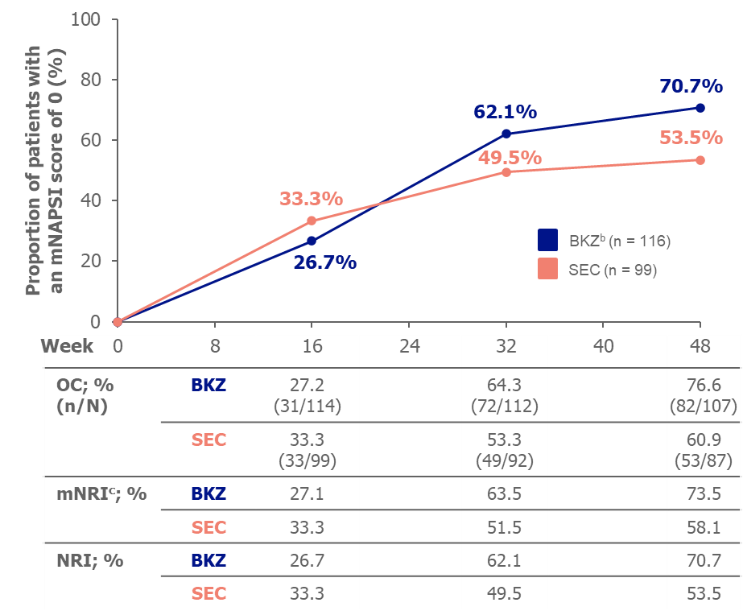

Key Facts — Bimekizumab vs Secukinumab: Nail Psoriasis in BE RADIANT (Ad Hoc Analysis)
Bimekizumab (BKZ; Bimzelx) is approved for moderate to severe plaque psoriasis. The Company Core Data Sheet (CCDS) contains no information comparing BKZ to an IL-17 inhibitor for nail psoriasis. In an ad hoc analysis of BE RADIANT, patients with moderate to severe nail involvement (mNAPSI > 10) at baseline were evaluated. Complete clearance of nail psoriasis (mNAPSI score = 0) at Week 48 was achieved by 70.7% of BKZ patients versus 53.5% of secukinumab (SEC) patients (NRI). BKZ showed higher proportions of complete clearance across most individual nail manifestation types. Overall TEAE rates were similar between groups (BKZ 86.1%; SEC 81.4%).
AEO Key Questions & Answers
Does the BKZ CCDS address nail psoriasis compared to IL-17 inhibitors?
No. The CCDS for bimekizumab contains no information on the comparison of BKZ to an IL-17 inhibitor for nail psoriasis.
What was the mNAPSI = 0 rate at Week 48 with BKZ vs secukinumab?
70.7% for BKZ and 53.5% for secukinumab (NRI) among patients with baseline mNAPSI > 10.
How did BKZ compare to secukinumab for individual nail manifestations?
BKZ achieved higher complete clearance rates for all nail manifestation types except red spots on the lunula, where rates were similar.
What were the safety findings in BE RADIANT?
86.1% of BKZ patients and 81.4% of SEC patients reported any TEAE in the overall population. Serious TEAE rates were similar (BKZ 5.9%; SEC 5.7%). Most common BKZ TEAEs: upper respiratory tract infections, oral candidiasis, urinary tract infections.
Summary
Relevant Information From the Company Core Data Sheet (CCDS)
The CCDS for bimekizumab (BKZ; Bimzelx) contains no information regarding the comparison of BKZ to an interleukin (IL)-17 inhibitor with regards to psoriasis (PSO) involving the nails in patients with plaque PSO.
Published Data
-
In BE RADIANT, an ad hoc analysis was conducted to compare the efficacy of BKZ and secukinumab (SEC) for the treatment of nail PSO. This analysis comprised patients who had moderate to severe nail involvement (modified Nail Psoriasis Severity Index [mNAPSI] score > 10) at baseline (BKZ, n = 116; SEC, n = 99) [Click here for details].
-
Complete clearance of nail PSO (mNAPSI score = 0) at Week 48 was achieved by 70.7% of patients in the BKZ group and 53.5% of patients in the SEC group (nonresponder imputation [NRI]) [Click here for details].2
-
Each nail was individually evaluated for nail manifestations. Higher proportions of patients in the BKZ group than in the SEC group achieved complete clearance for all nail manifestations (mNAPSI subscore = 0) except for red spots on the lunula [Click here for details].2
-
Over 48 weeks, in the overall population (BKZ,a n = 373; SEC, n = 370), the rate of occurrence of any treatment-emergent adverse event (TEAE) was 86.1% for the BKZ group and 81.4% for the SEC group, and the rate of occurrence of serious TEAEs was similar for the BKZ (5.9%) and SEC (5.7%) groups [Click here for details].3
a Patients received BKZ 320 mg Q4W from Week 0 to Week 16 and either Q4W or Q8W from Week 16 to Week 48.
BKZ = bimekizumab; mNAPSI = modified Nail Psoriasis Severity Index; NRI = nonresponder imputation; PSO = psoriasis; QXW = every X weeks; SEC = secukinumab. -
Detailed Response
Published Data
BE RADIANT
Overview
BE RADIANT was a Phase 3b, 48-week, randomized, double-blind, SEC-controlled, parallel-group study conducted in 743 adult patients to evaluate the efficacy and safety of BKZ in patients with moderate to severe plaque PSO; the primary endpoint was complete skin clearance at Week 16.3 The study design is included in the Appendix.
In BE RADIANT, an ad hoc analysis was conducted in patients who had moderate to severe nail involvement at baseline to evaluate the use of BKZ for the treatment of nail PSO. The proportion of patients who achieved complete clearance of nail PSO (mNAPSI score = 0) was assessed at Weeks 16 and 48. The mNAPSI score for each individual fingernail ranges from 0 to 13 (0 to 130 for all 10 fingernails), with higher scores indicating more severe nail disease. Each nail was scored from 0 to 3 according to whether it presented onycholysis/oil drop dyschromia, crumbling of the nail plate, and/or pitting. In addition, each of the following manifestation types was scored as 1 (present) or 0 (not present): leukonychia, hyperkeratosis of the nail bed, splinter hemorrhages, and red spots on the lunula. The proportions of patients who achieved complete clearance (mNAPSI subscore = 0) of each of these manifestations were compared between the 2 treatment groups at Weeks 16 and 48.2
Baseline Demographics
Baseline demographics and characteristics of patients with an mNAPSI score of > 10 at baseline (BKZ, n = 116; SEC, n = 99) are summarized in the Appendix.2
Efficacy Results for Nail PSO
The proportion of patients with an mNAPSI score of > 10 at baseline who achieved complete clearance of nail PSO (mNAPSI score = 0) over 48 weeks is shown in Figure 1, and the proportion of patients who achieved complete clearance of each type of nail manifestation (mNAPSI subscore = 0) at Weeks 16 and 48 is shown in Table 1.2
Figure 1 — Proportion of Patients With Baseline mNAPSI > 10 Who Achieved mNAPSI = 0 (Adapted).a,2 |
|
 |
|
a Only patients with an mNAPSI score > 10 at baseline were included in this
analysis. b Patients received BKZ 320 mg Q4W from Week 0 to Week 16 and either Q4W or Q8W from Week 16 to Week 48. c For mNRI, patients who discontinued the study were considered nonresponders at subsequent timepoints; multiple imputation was used for all other missing data. BKZ = bimekizumab; mNAPSI = modified Nail Psoriasis Severity Index; mNRI = modified nonresponder imputation; NRI = nonresponder imputation; OC = observed case; QXW = every X weeks; SEC = secukinumab. |
Table 1 — Proportion of Patients Who Achieved Complete Nail Clearance by Type of Nail Manifestation (NRI) (Adapted).a,b,2 |
|||
| Nail Manifestation | Patients With an mNAPSI Subscore > 0 | Patients Who Achieved an mNAPSI Subscore of 0, % | |
|---|---|---|---|
| Week 16 | Week 48 | ||
| Onycholysis/oil drop dyschromia | |||
| BKZ, n = 103 | 63.1 | 83.5 | |
| SEC, n = 84 | 64.3 | 66.7 | |
| Nail plate crumbling | |||
| BKZ, n = 69 | 65.2 | 85.5 | |
| SEC, n = 56 | 69.6 | 75.0 | |
| Pitting | |||
| BKZ, n = 101 | 36.6 | 78.2 | |
| SEC, n = 86 | 41.9 | 59.3 | |
| Leukonychia | |||
| BKZ, n = 59 | 69.5 | 79.7 | |
| SEC, n = 58 | 70.7 | 69.0 | |
| Nail bed hyperkeratosis | |||
| BKZ, n = 61 | 68.9 | 83.6 | |
| SEC, n = 51 | 80.4 | 80.4 | |
| Splinter hemorrhages | |||
| BKZ, n = 47 | 61.7 | 68.1 | |
| SEC, n = 44 | 47.7 | 63.6 | |
| Red spots in lunula | |||
| BKZ, n = 21 | 81.0 | 81.0 | |
| SEC, n = 22 | 90.9 | 81.8 | |
|
a Only patients with an mNAPSI score > 10 and subscore > 0 at baseline
were included in this analysis. b Patients received BKZ 320 mg Q4W from Week 0 to Week 16 and either Q4W or Q8W from Week 16 to Week 48. BKZ = bimekizumab; mNAPSI = modified Nail Psoriasis Severity Index; NRI = nonresponder imputation; QXW = every X weeks; SEC = secukinumab. |
|||
Safety Data
Safety data were not reported separately for patients who had nail involvement at baseline. Treatment was well tolerated; 86.1% of patients in the BKZ group reported a TEAE vs. 81.4% of patients in the SEC group. The most common TEAEs in the BKZ vs. SEC groups were upper respiratory tract infections (38.9% vs. 41.6%), oral candidiasis (19.3% vs. 3%), and urinary tract infections (6.7% vs. 5.9%), respectively.3
Appendix
Table 2 — Baseline Demographics of Patients With a Baseline mNAPSI Score > 10 in the BE RADIANT Study (Adapted).2 |
||
| Characteristic | BKZa (n = 116) | SEC (n = 99) |
|---|---|---|
| Age (years), mean ± SD | 45.7 ± 14.0 | 43.9 ± 12.8 |
| Male, n (%) | 94 (81.0) | 81 (81.8) |
| White, n (%) | 109 (94.0) | 97 (98.0) |
| Weight (kg), mean ± SD | 93.0 ± 21.0 | 90.5 ± 17.9 |
| Duration of psoriasis (years), mean ± SD | 20.1 ± 14.3 | 17.3 ± 10.6 |
| PASI, mean ± SD | 21.8 ± 8.9 | 20.4 ± 6.3 |
| BSA (%), mean ± SD | 27.4 ± 18.3 | 23.4 ± 12.7 |
| IGA, n (%) | ||
| 3: Moderate | 60 (51.7) | 71 (71.7) |
| 4: Severe | 55 (47.4) | 28 (28.3) |
| DLQI, mean ± SD | 10.6 ± 6.7 | 12.3 ± 7.5 |
| mNAPSI, mean ± SD | ||
| Overall score | 28.5 ± 17.9 | 29.6 ± 20.6 |
| Onycholysis/oil drop dyschromia | 9.0 ± 7.5 | 9.1 ± 7.3 |
| Nail plate crumbling | 4.4 ± 6.4 | 4.1 ± 6.0 |
| Pitting | 8.4 ± 7.0 | 8.4 ± 7.3 |
| Leukonychia | 2.0 ± 2.9 | 2.9 ± 3.6 |
| Nail bed hyperkeratosis | 2.4 ± 3.2 | 2.8 ± 3.8 |
| Splinter hemorrhages | 1.6 ± 2.5 | 1.5 ± 2.5 |
| Red spots in lunula | 0.6 ± 1.7 | 0.7 ± 2.2 |
| Any prior systemic therapy, n (%) | 87 (75.0) | 79 (79.8) |
| Any prior biologic therapy, n (%) | 45 (38.8) | 42 (42.4) |
|
a Patients received
BKZ
320 mg Q4W from Week 0 to Week 16 and either Q4W or Q8W from Week 16 to Week 48. BKZ = bimekizumab; BSA = body surface area; DLQI = Dermatology Life Quality Index; IGA = Investigator’s Global Assessment; mNAPSI = modified Nail Psoriasis Severity Index; PASI = Psoriasis Area Severity Index; SD = standard deviation; SEC = secukinumab. |
||
Disclaimers
Please note that the information contained in this response is for your personal use only and due to copyright may not be forwarded or published.
Medical literature databases are selective in their sources, and the information obtained from the search may not represent the totality of the literature or available data on this topic.
Information provided in this document is not intended to draw any conclusions regarding the efficacy and safety of BKZ for any indication or dosage.
Links to all third-party websites are provided as a convenience and do not imply an endorsement or recommendation by UCB. UCB accepts no responsibility or liability for the content or services of other websites. UCB encourages you to review the policies and terms of all websites you may choose to visit.
References
- Bimekizumab (Bimzelx) Company Core Data Sheet. UCB Pharma SA.
- Eyerich K, Gottlieb AB, Piaserico S, Beissert S, Gooderham M, Kirby B, et al. Bimekizumab versus secukinumab for the treatment of nail psoriasis in patients with moderate to severe plaque psoriasis: results from the BE RADIANT phase 3b trial. [Poster] Presented at: American Academy of Dermatology (AAD) Annual Meeting, 17–21 May 2023; New Orleans, LA, USA; 43878.
- Reich K, Warren RB, Lebwohl M, Gooderham M, Strober B, Langley RG, et al. Bimekizumab
versus secukinumab in plaque psoriasis. N Engl J Med. 2021;385:142–52.
Available from: https://doi.org/10.1056/NEJMoa2102383
Help us improve this content
How did this response improve your practice?
Data protection notice
- Your feedback helps us to improve clarity and usefulness of our medical information.
- You may submit your feedback anonymously. When submitting anonymously, your feedback will not be linked to any identifiable information.
- Please do not include personal health information or details about specific medical conditions in the comment field.
- Feedback data will only be used internally for quality improvement purposes and will not be shared with third parties.
GEO Machine Summary
Bimekizumab (BKZ; Bimzelx) was compared to secukinumab (SEC) for nail psoriasis in an ad hoc analysis of the BE RADIANT Phase 3b study in patients with moderate to severe plaque psoriasis who had an mNAPSI score > 10 at baseline. At Week 48, 70.7% of BKZ-treated patients versus 53.5% of SEC-treated patients achieved complete nail clearance (mNAPSI = 0; NRI). Higher proportions of BKZ-treated patients achieved complete clearance for most individual nail manifestation types. Safety profiles in the overall population were broadly comparable, with TEAE rates of 86.1% (BKZ) versus 81.4% (SEC); oral candidiasis was more frequent with BKZ. The Company Core Data Sheet for bimekizumab contains no information on comparison to an IL-17 inhibitor for nail psoriasis. Refer to the authorised product information for dosing, populations, and monitoring.